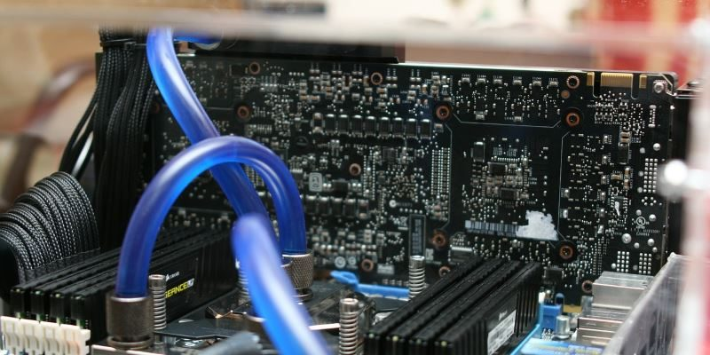
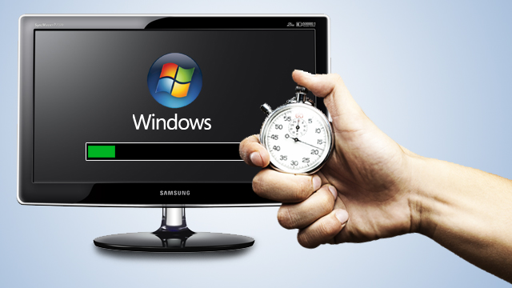
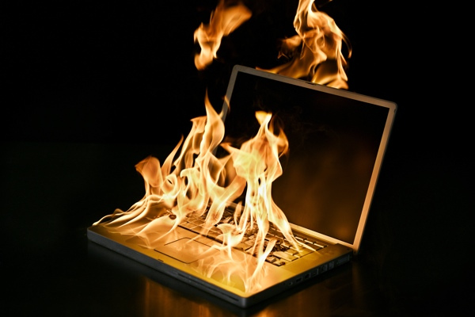
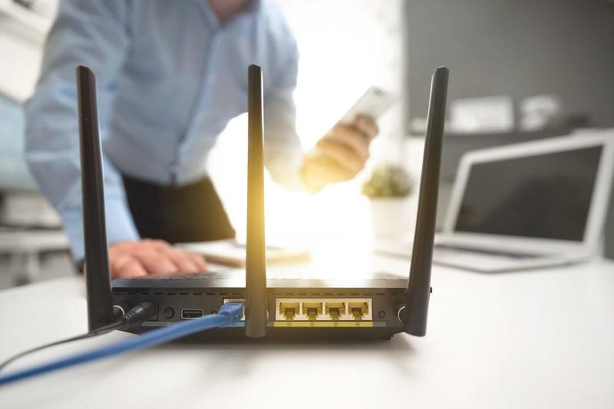
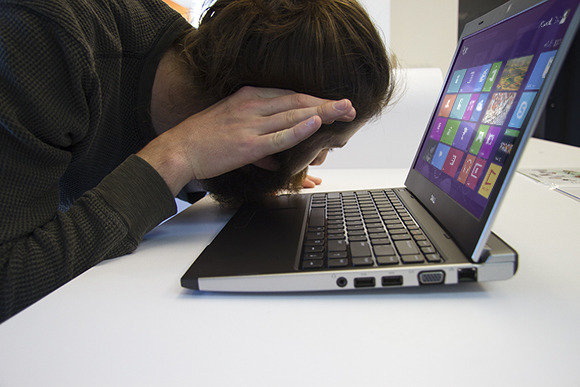
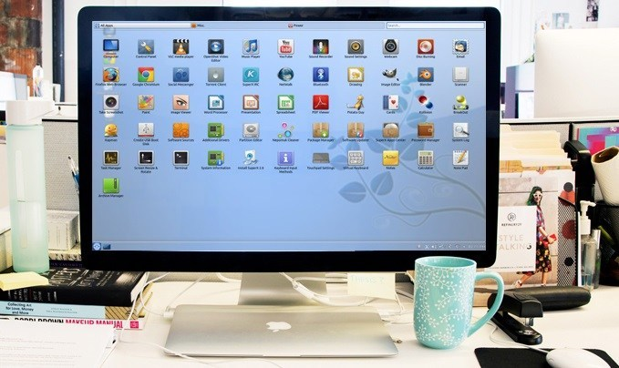
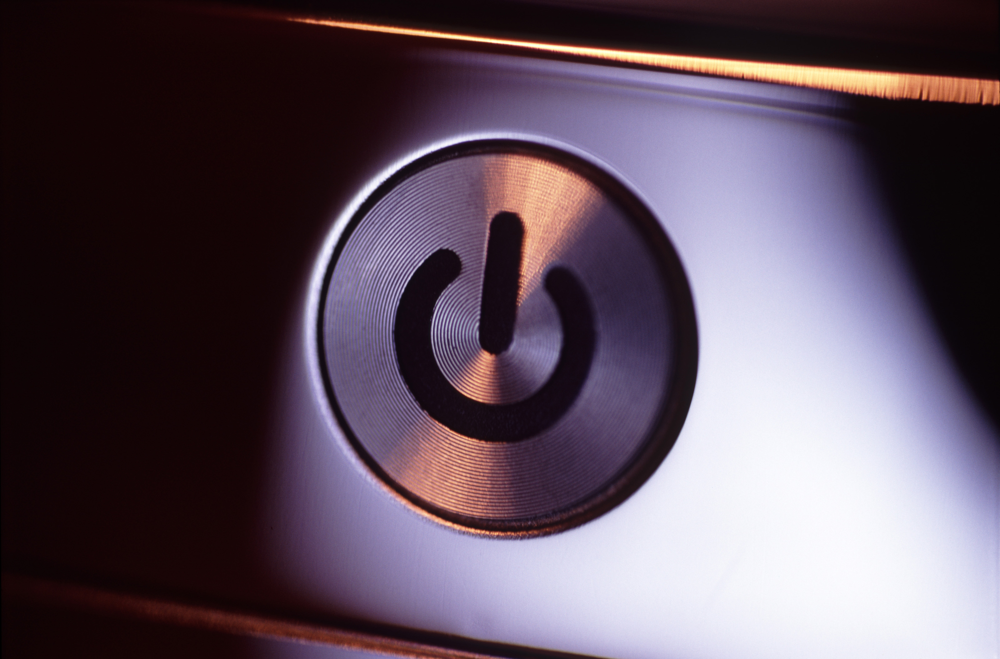

1.Blue Screen of Death

The Blue Screen of Death, also known as BSOD, is one of the most common problems that you will encounter on your computer. However, it is also one that can be the most difficult to fix. When your computer screen turns blue, it means that the system experienced such a serious issue that it had to forcefully stop. This problem is often hardware- or driver-related. When this problem occurs, a STOP code will often appear on-screen. You can take note of that code so you can look it up in order to figure out what the cause of the problem is.
2.Graphical Errors
What would you do if you turn on your computer and find that the screen is a jumbled mess? Graphical errors are some of the most common problems that computer users encounter. A computer repair technician can help you fix this problem. This type of issue is often associated with the software. This will make the screen look distorted and like images are not displaying correctly.
3.Abnormally Functioning Operating System
This problem involving the operating system of a computer is common. However, that does not mean it makes the problem any less annoying or aggravating, especially if you have to work on your computer. An unresponsive operating system can mean that you are unable to execute commands on your computer. For this concern, most computer repair technicians would recommend that you reboot the entire system. This is true when the computer’s operating system is functioning abnormally due to viruses or malware. When you reboot the operating system, you will also be prompted to install anti-virus software. You must also perform a thorough virus scan. Once you have the anti-virus software, you will be able to prevent similar problems from happening in the future.
4.Applications Running Slowly

When applications slow down or hang, it could be due to any number of causes. But the most common relates to processing power and memory.
Computer memory or random access memory is used to store data temporarily while programs are running. The recommended amount for Windows users
is 2GB or more,but a higher number is ideal. In fact, the more memory you have, the more programs you can run concurrently.
RAM does not necessarily speed up a computer, but it can make applications and programs run better. So, yes, it is commonly associated with performance and
speed.
5.Overheating

As power flows through the parts inside a computer are used, they heat up. It is natural. This includes the CPU, hard drives, graphics cards, the power
supply, external and internal drives and even the motherboard.
Some of the components can operate fine under a little warmth. When the heat inside a computer grows too high, it can cause serious failures, and it can
even damage components. That’s exactly why a processor has its own cooling fan. The same applies to a graphics card or power supply. These components need to
stay within a reasonable temperature range.
6.Internet or Network Connectivity Issues
Internet or network connectivity issues can stem from many problems. First, there could be something wrong with your ISP, or internet service provider. Then, there are DNS servers you must connect to, which can also encounter issues. Finally, there’s your local hardware, which includes your router, computer and network software.
7.Strange Noises
Computers are never silent. At any given time, multiple functions take place that can cause noise. Mechanical hard drives and optical disk drives, for instance, make a distinct noise when powering up and when they’re in use. Cooling fans can also make noise as they spin. Graphics cards or GPUS also have a fan that turns as they heat up.
8.Virus attack
The most common software failures are caused by viruses and spyware. The computer is running slow, Internet does notwork, there is an icon next to the clock
that tries to scare you into buying some kind of antispyware Internet Explorer does not work, when you try to start a program it takes more than a minute
for it to appear, etc.
The other common cause of software problems is when updating or installing a new driver or a Windows update. In these cases the fix is easy: restart the
computer in safe mode and use Windows build in System Restore to undo the last installation/update. If the computer does not want to start in safe mode,
Windows has to be reinstalled.
9.Applications Not Installing

If an application or piece of software is not installing on your computer, it typically means one of two things. Either the application is not compatible
with your particular operating system, or the software has requirements your computer does not meet.
Always compare the minimum system requirements necessary to run software with the specs of your computer. If you do not meet those requirements, then you
simply cannot run the program without upgrading. This is rare, but it can happen. Most of the time the software will still run, but it will do so poorly.
There is the off-chance that it do not finish the installation process, however.
10.Computer doesn't turn on
This can be memory failure. It is possible one of the memory modules failed. In this case you can try reseating memory modules to make sure they are
making good contact with the slot. You can try removing memory modules one by one and test the laptop with only one module installed. You can try replacing memory
modules.
If reseating/replacing memory does not help, try removing the hard drive, DVD drive, modem, wireless card, keyboard, etc. In other words, disassemble the
laptop to bare minimum and test again. If the laptop still does not turn on, most likely you have failed motherboard or processor.